Load Packages and Data
train = fread("Train_UWu5bXk.csv")
test = fread("Test_u94Q5KV.csv")
submission = fread("SampleSubmission_TmnO39y.csv")Get to know the Data
dim(train); dim(test)## [1] 8523 12## [1] 5681 11str(train)## Classes 'data.table' and 'data.frame': 8523 obs. of 12 variables:
## $ Item_Identifier : chr "FDA15" "DRC01" "FDN15" "FDX07" ...
## $ Item_Weight : num 9.3 5.92 17.5 19.2 8.93 ...
## $ Item_Fat_Content : chr "Low Fat" "Regular" "Low Fat" "Regular" ...
## $ Item_Visibility : num 0.016 0.0193 0.0168 0 0 ...
## $ Item_Type : chr "Dairy" "Soft Drinks" "Meat" "Fruits and Vegetables" ...
## $ Item_MRP : num 249.8 48.3 141.6 182.1 53.9 ...
## $ Outlet_Identifier : chr "OUT049" "OUT018" "OUT049" "OUT010" ...
## $ Outlet_Establishment_Year: int 1999 2009 1999 1998 1987 2009 1987 1985 2002 2007 ...
## $ Outlet_Size : chr "Medium" "Medium" "Medium" "" ...
## $ Outlet_Location_Type : chr "Tier 1" "Tier 3" "Tier 1" "Tier 3" ...
## $ Outlet_Type : chr "Supermarket Type1" "Supermarket Type2" "Supermarket Type1" "Grocery Store" ...
## $ Item_Outlet_Sales : num 3735 443 2097 732 995 ...
## - attr(*, ".internal.selfref")=<externalptr>str(test)## Classes 'data.table' and 'data.frame': 5681 obs. of 11 variables:
## $ Item_Identifier : chr "FDW58" "FDW14" "NCN55" "FDQ58" ...
## $ Item_Weight : num 20.75 8.3 14.6 7.32 NA ...
## $ Item_Fat_Content : chr "Low Fat" "reg" "Low Fat" "Low Fat" ...
## $ Item_Visibility : num 0.00756 0.03843 0.09957 0.01539 0.1186 ...
## $ Item_Type : chr "Snack Foods" "Dairy" "Others" "Snack Foods" ...
## $ Item_MRP : num 107.9 87.3 241.8 155 234.2 ...
## $ Outlet_Identifier : chr "OUT049" "OUT017" "OUT010" "OUT017" ...
## $ Outlet_Establishment_Year: int 1999 2007 1998 2007 1985 1997 2009 1985 2002 2007 ...
## $ Outlet_Size : chr "Medium" "" "" "" ...
## $ Outlet_Location_Type : chr "Tier 1" "Tier 2" "Tier 3" "Tier 2" ...
## $ Outlet_Type : chr "Supermarket Type1" "Supermarket Type1" "Grocery Store" "Supermarket Type1" ...
## - attr(*, ".internal.selfref")=<externalptr>Combine Train and Test
test[,Item_Outlet_Sales := NA]
combi = rbind(train, test) # combining train and test datasets
dim(combi)## [1] 14204 12Univariate Analysis
Target Variable
As our target variable (Item_Outlet_Sales) is continuous. We can visualise it by plotting its histogram.
ggplot(train) + geom_histogram(aes(train$Item_Outlet_Sales), binwidth = 100, fill = "yellow") +
xlab("Item_Outlet_Sales")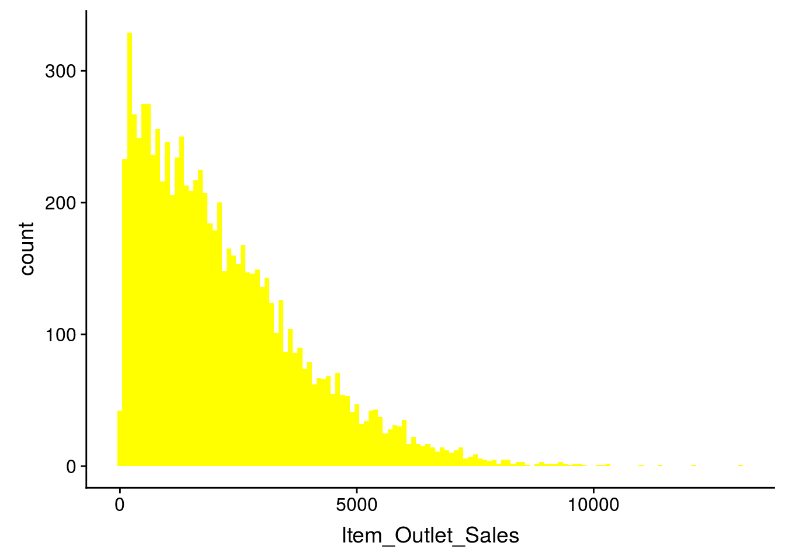
Observations:
- As you can see, it is a right skewd variable and would need some data transformation to treat its skewness.
Independent Variables (Numeric Variables)
Let’s preview the numeric independent variables. We’ll again use the histograms for visualizations because that will help us in visualizing the distribution of the variables.
p1 = ggplot(combi) + geom_histogram(aes(Item_Weight), binwidth = 0.5, fill = "blue")
p2 = ggplot(combi) + geom_histogram(aes(Item_Visibility), binwidth = 0.005, fill = "blue")
p3 = ggplot(combi) + geom_histogram(aes(Item_MRP), binwidth = 1, fill = "blue")
plot_grid(p1, p2, p3, nrow = 1) # plot_grid() from cowplot package## Warning: Removed 2439 rows containing non-finite values (stat_bin).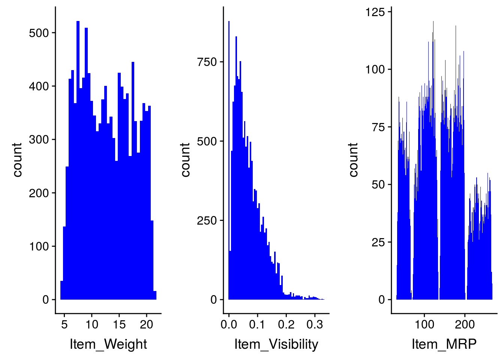
Observations:
- There appears to be no clear-cut pattern in Item_Weight.
- Item_Visibility is right-skewed and should be transformed to curb its skewness.
- We can clearly see 4 different distributions for Item_MRP. It’s an interesting insight!
Independent Variables (Categorical Variables)
Now we’ll try to explore and gain some insights from the categorical variables. A categorical variable or feature can have only a finite set of values. Let’s first plot Item_Fat_Content.
ggplot(combi %>% group_by(Item_Fat_Content) %>% summarise(Count = n())) +
geom_bar(aes(Item_Fat_Content, Count), stat = "identity", fill = "coral1")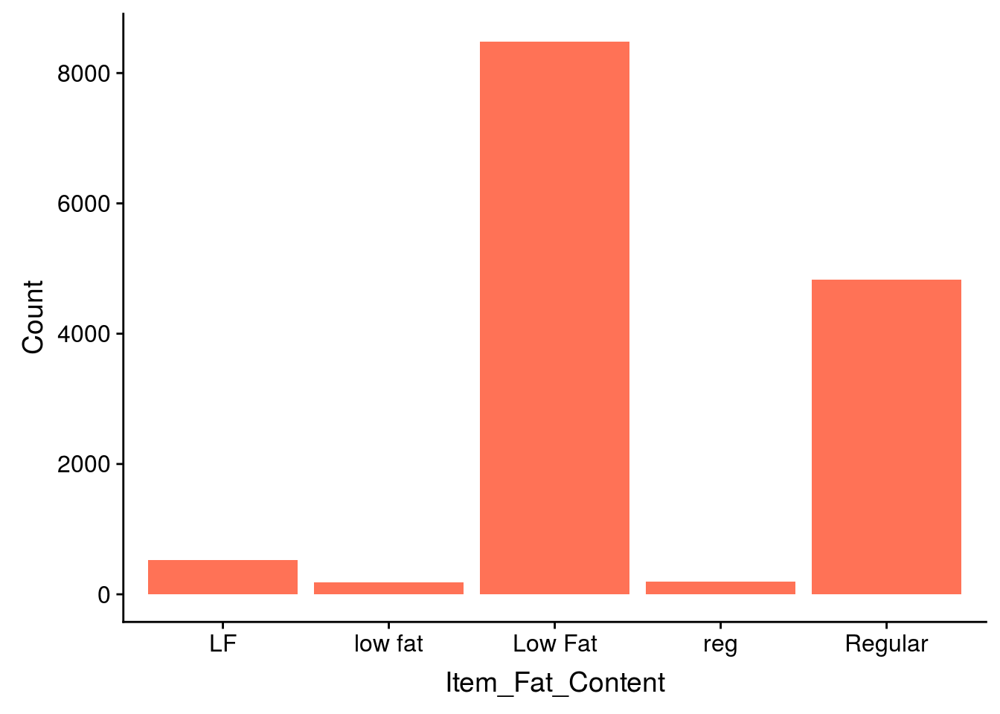
Observations:
- In the figure above, ‘LF’, ‘low fat’, and ‘Low Fat’ are the same category and can be combined into one. Similarly, ‘reg’ and ‘Regular’ can be combined into one. After making these corrections we’ll plot the same figure again.
combi$Item_Fat_Content[combi$Item_Fat_Content == "LF"] = "Low Fat"
combi$Item_Fat_Content[combi$Item_Fat_Content == "low fat"] = "Low Fat"
combi$Item_Fat_Content[combi$Item_Fat_Content == "reg"] = "Regular"
ggplot(combi %>% group_by(Item_Fat_Content) %>% summarise(Count = n())) +
geom_bar(aes(Item_Fat_Content, Count), stat = "identity", fill = "coral1")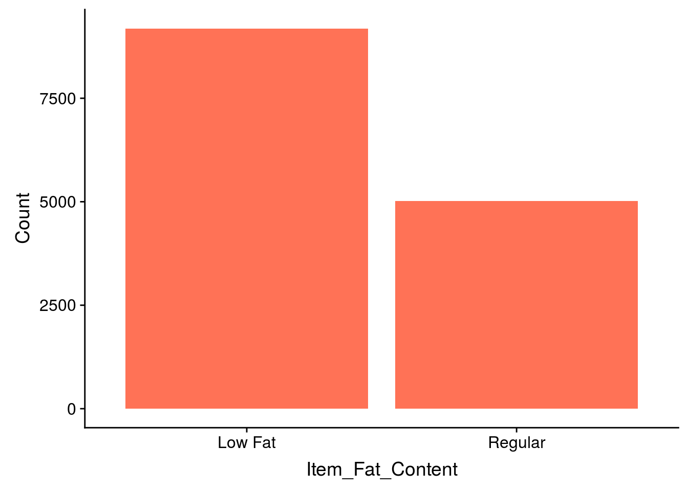
Now let’s check the other categorical variables.
# plot for Item_Type
p4 = ggplot(combi %>% group_by(Item_Type) %>% summarise(Count = n())) +
geom_bar(aes(Item_Type, Count), stat = "identity", fill = "coral1") +
xlab("") +
geom_label(aes(Item_Type, Count, label = Count), vjust = 0.5) +
theme(axis.text.x = element_text(angle = 45, hjust = 1))+
ggtitle("Item_Type")# plot for Outlet_Identifier
p5 = ggplot(combi %>% group_by(Outlet_Identifier) %>% summarise(Count = n())) +
geom_bar(aes(Outlet_Identifier, Count), stat = "identity", fill = "coral1") +
geom_label(aes(Outlet_Identifier, Count, label = Count), vjust = 0.5) +
theme(axis.text.x = element_text(angle = 45, hjust = 1))# plot for Outlet_Size
p6 = ggplot(combi %>% group_by(Outlet_Size) %>% summarise(Count = n())) +
geom_bar(aes(Outlet_Size, Count), stat = "identity", fill = "coral1") +
geom_label(aes(Outlet_Size, Count, label = Count), vjust = 0.5) +
theme(axis.text.x = element_text(angle = 45, hjust = 1))second_row = plot_grid(p5, p6, nrow = 1)
plot_grid(p4, second_row, ncol = 1)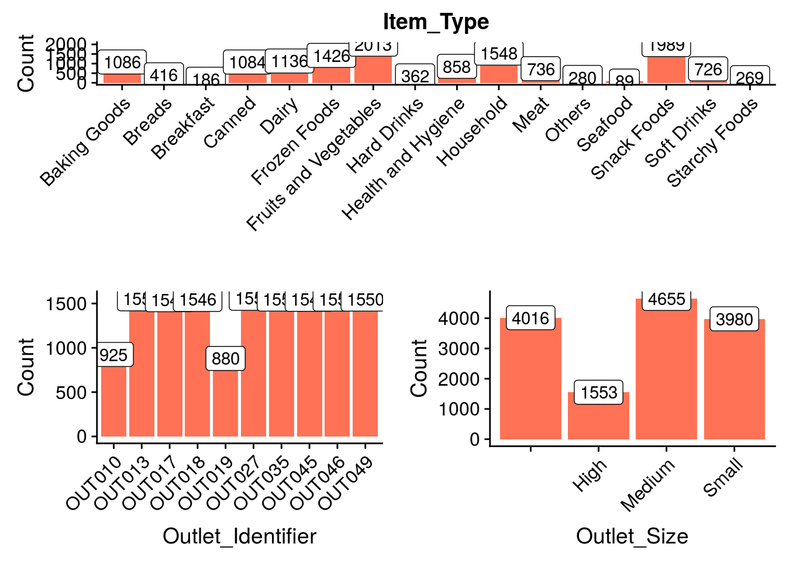
Observations:
- In Outlet_Size’s plot, for 4016 observations, Outlet_Size is blank or missing. We’ll check for this in the Bivariate Analysis to substitute the missing values in the Outlet_Size.
We’ll also check the remaining categorical variables.
# plot for Outlet_Establishment_Year
p7 = ggplot(combi %>% group_by(Outlet_Establishment_Year) %>% summarise(Count = n())) +
geom_bar(aes(factor(Outlet_Establishment_Year), Count), stat = "identity", fill = "coral1") +
geom_label(aes(factor(Outlet_Establishment_Year), Count, label = Count), vjust = 0.5) +
xlab("Outlet_Establishment_Year") +
theme(axis.text.x = element_text(size = 8.5))# plot for Outlet_Type
p8 = ggplot(combi %>% group_by(Outlet_Type) %>% summarise(Count = n())) +
geom_bar(aes(Outlet_Type, Count), stat = "identity", fill = "coral1") +
geom_label(aes(factor(Outlet_Type), Count, label = Count), vjust = 0.5) +
theme(axis.text.x = element_text(size = 8.5))# ploting both plots together
plot_grid(p7, p8, ncol = 2)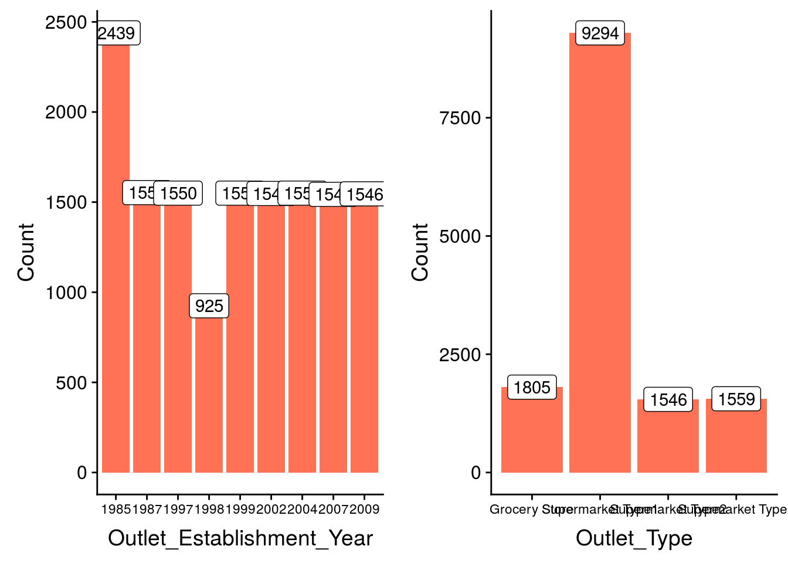
Observations:
- Lesser number of observations in the data for the outlets established in the year 1998 as compared to the other years.
- Supermarket Type 1 seems to be the most popular category of Outlet_Type.
Bivariate Analysis
After looking at every feature individually, let’s now do some bivariate analysis. Here, we’ll explore the independent variables with respect to the target variable. The objective is to discover hidden relationships between the independent variable and the target variable and use those findings in missing data imputation and feature engineering.
We’ll make use of scatter plots for the continuous or numeric variables and violin plots for the categorical variables.
train = combi[1:nrow(train)] # extracting train data from the combined dataTarget Variable vs Independent Numerical Variables
Let’s explore the numerical variables first.
# Item_Weight vs Item_Outlet_Sales
p9 = ggplot(train) +
geom_point(aes(Item_Weight, Item_Outlet_Sales), colour = "violet", alpha = 0.3) +
theme(axis.title = element_text(size = 8.5))# Item_Visibility vs Item_Outlet_Sales
p10 = ggplot(train) +
geom_point(aes(Item_Visibility, Item_Outlet_Sales), colour = "violet", alpha = 0.3) +
theme(axis.title = element_text(size = 8.5))# Item_MRP vs Item_Outlet_Sales
p11 = ggplot(train) +
geom_point(aes(Item_MRP, Item_Outlet_Sales), colour = "violet", alpha = 0.3) +
theme(axis.title = element_text(size = 8.5))second_row_2 = plot_grid(p10, p11, ncol = 2)
plot_grid(p9, second_row_2, nrow = 2)## Warning: Removed 1463 rows containing missing values (geom_point).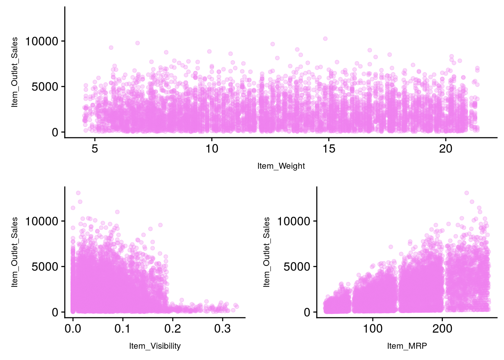
Observations:
- Item_Outlet_Sales is spread well across the entire range of the Item_Weight without any obvious pattern.
- In Item_Visibility vs Item_Outlet_Sales, there is a string of points at Item_Visibility = 0.0 which seems strange as item visibility cannot be completely zero. We will take note of this issue and deal with it in the later stages.
- In the third plot of Item_MRP vs Item_Outlet_Sales, we can clearly see 4 segments of prices that can be used in feature engineering to create a new variable.
Target Variable vs Independent Categorical Variables
Now we’ll visualise the categorical variables with respect to Item_Outlet_Sales. We will try to check the distribution of the target variable across all the categories of each of the categorical variable.
We could have used boxplots here, but instead we’ll use the violin plots as they show the full distribution of the data. The width of a violin plot at a particular level indicates the concentration or density of data at that level. The height of a violin tells us about the range of the target variable values.
# Item_Type vs Item_Outlet_Sales
p12 = ggplot(train) +
geom_violin(aes(Item_Type, Item_Outlet_Sales), fill = "magenta") +
theme(axis.text.x = element_text(angle = 45, hjust = 1),
axis.text = element_text(size = 6),
axis.title = element_text(size = 8.5))# Item_Fat_Content vs Item_Outlet_Sales
p13 = ggplot(train) +
geom_violin(aes(Item_Fat_Content, Item_Outlet_Sales), fill = "magenta") +
theme(axis.text.x = element_text(angle = 45, hjust = 1),
axis.text = element_text(size = 8),
axis.title = element_text(size = 8.5))# Outlet_Identifier vs Item_Outlet_Sales
p14 = ggplot(train) +
geom_violin(aes(Outlet_Identifier, Item_Outlet_Sales), fill = "magenta") +
theme(axis.text.x = element_text(angle = 45, hjust = 1),
axis.text = element_text(size = 8),
axis.title = element_text(size = 8.5))second_row_3 = plot_grid(p13, p14, ncol = 2)
plot_grid(p12, second_row_3, ncol = 1)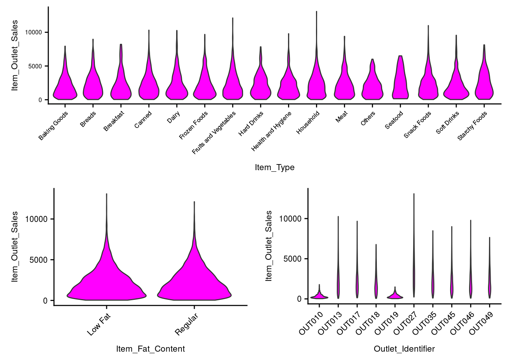
Observations:
- Distribution of Item_Outlet_Sales across the categories of Item_Type is not very distinct and same is the case with Item_Fat_Content.
- The distribution for OUT010 and OUT019 categories of Outlet_Identifier are quite similar and very much different from the rest of the categories of Outlet_Identifier.
In Univariate Analysis, we come to know about the empty values in Outlet_Size variable. Let’s check the distribution of the target variable across Outlet_Size.
ggplot(train) + geom_violin(aes(Outlet_Size, Item_Outlet_Sales), fill = "magenta")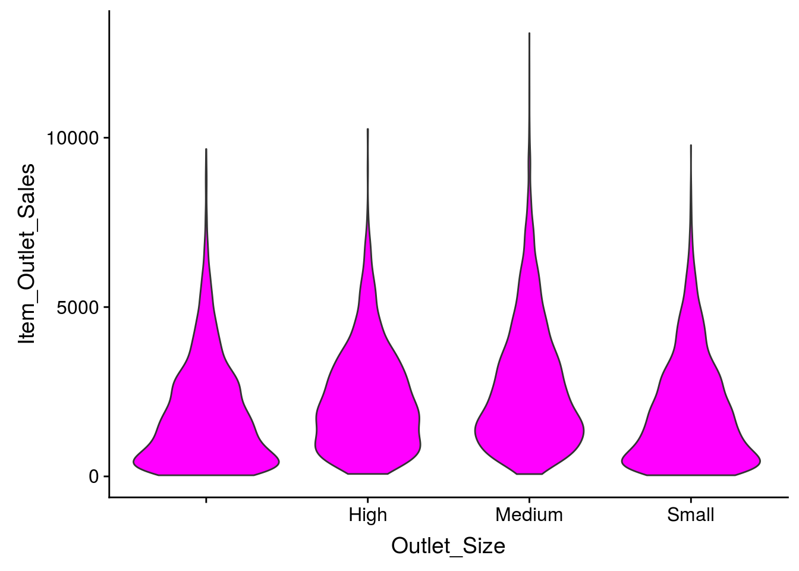
Observations:
- The distribution of ‘Small’ Outlet_Size is almost identical to the distribution of the blank category (first vioin) of Outlet_Size. So, we can substitute the blanks in Outlet_Size with ‘Small’.
- Please note that this is not the only way to impute missing values, but for the time being we will go ahead and impute the missing values with ‘Small’.
Let’s examine the remaining variables.
p15 = ggplot(train) + geom_violin(aes(Outlet_Location_Type, Item_Outlet_Sales), fill = "magenta")
p16 = ggplot(train) + geom_violin(aes(Outlet_Type, Item_Outlet_Sales), fill = "magenta")
plot_grid(p15, p16, ncol = 1)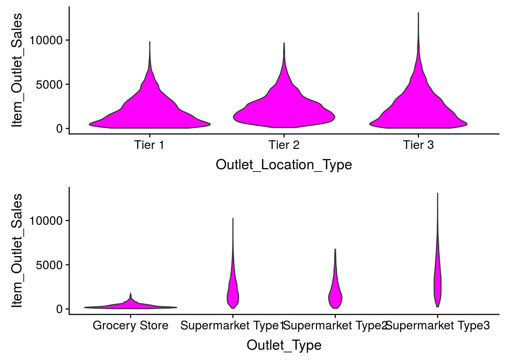
Observations:
- Tier 1 and Tier 3 locations of Outlet_Location_Type look similar.
- In the Outlet_Type plot, Grocery Store has most of its data points around the lower sales values as compared to the other categories.
Missing Value Treatment
There are different methods to treat missing values based on the problem and the data. Some of the common techniques are as follows:
Deletion of rows: In train dataset, observations having missing values in any variable are deleted. The downside of this method is the loss of information and drop in prediction power of model.
Mean/Median/Mode Imputation: In case of continuous variable, missing values can be replaced with mean or median of all known values of that variable. For categorical variables, we can use mode of the given values to replace the missing values.
Building Prediction Model: We can even make a predictive model to impute missing data in a variable. Here we will treat the variable having missing data as the target variable and the other variables as predictors. We will divide our data into 2 datasets—one without any missing value for that variable and the other with missing values for that variable. The former set would be used as training set to build the predictive model and it would then be applied to the latter set to predict the missing values.
You can try the following code to quickly find missing values in a variable.
sum(is.na(combi$Item_Weight))## [1] 2439Imputing Missing Values
As seen above, we have missing values in Item_Weight and Item_Outlet_Sales. Missing data in Item_Outlet_Sales can be ignored since they belong to the test dataset. We’ll now impute Item_Weight with mean weight based on the Item_Identifier variable.
missing_index = which(is.na(combi$Item_Weight))
for(i in missing_index){
item = combi$Item_Identifier[i]
combi$Item_Weight[i] = mean(combi$Item_Weight[combi$Item_Identifier == item], na.rm = T)
}Now let’s see if there is still any missing data in Item_Weight?
sum(is.na(combi$Item_Weight))## [1] 0Observations:
- Zero missing values! GREAT. It means we have successfully imputed the missing data in the feature.
Replacing 0’s in Item_Visibility variable
Similarly, zeroes in Item_Visibility variable can be replaced with Item_Identifier wise mean values of Item_Visibility. It can be visualized in the plot below.
ggplot(combi) + geom_histogram(aes(Item_Visibility), bins = 100, fill = "yellow")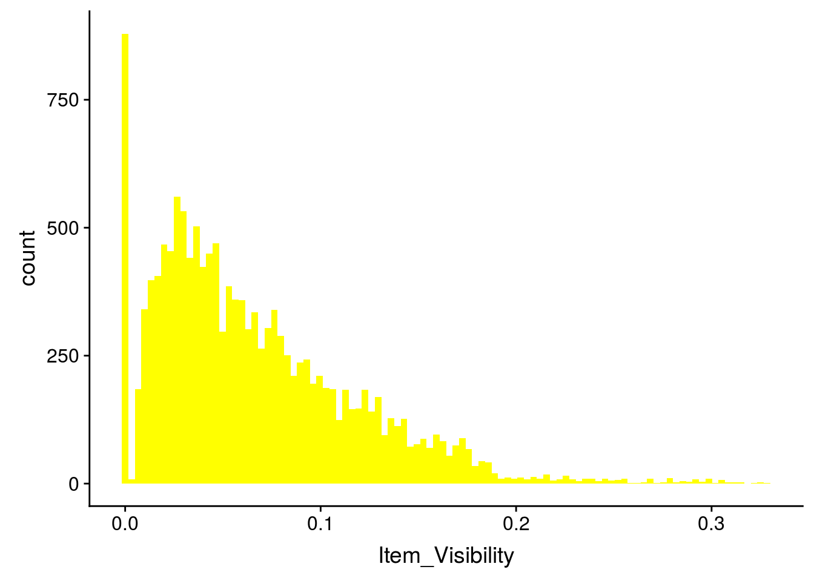
Let’s replace the zeroes.
zero_index = which(combi$Item_Visibility == 0)
for(i in zero_index){
item = combi$Item_Identifier[i]
combi$Item_Visibility[i] = mean(combi$Item_Visibility[combi$Item_Identifier == item], na.rm = T)
}After the replacement of zeroes, We’ll plot the histogram of Item_Visibility again. In the histogram, we can see that the issue of zero item visibility has been resolved.
ggplot(combi) + geom_histogram(aes(Item_Visibility), bins = 100, fill = "yellow")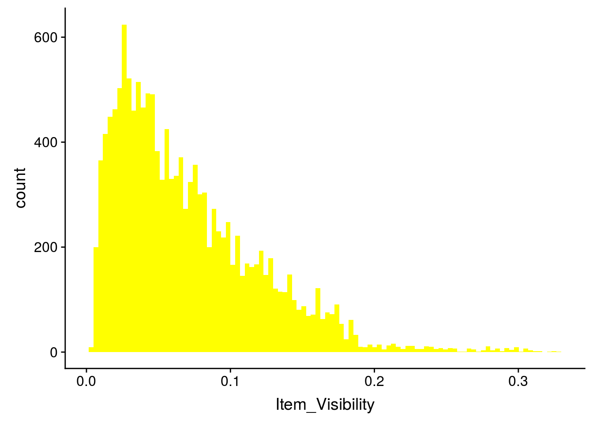
Feature Engineering
In this section we will create the following new features:
- Item_Type_new: Broader categories for the variable Item_Type.
- Item_category: Categorical variable derived from Item_Identifier.
- Outlet_Years: Years of operation for outlets.
- price_per_unit_wt: Item_MRP/Item_Weight
- Item_MRP_clusters: Binned feature for Item_MRP.
We can have a look at the Item_Type variable and classify the categories into perishable and non_perishable as per our understanding and make it into a new feature.
perishable = c("Breads", "Breakfast", "Dairy", "Fruits and Vegetables", "Meat", "Seafood")non_perishable = c("Baking Goods", "Canned", "Frozen Foods", "Hard Drinks", "Health and Hygiene", "Household", "Soft Drinks")# create a new feature 'Item_Type_new'
combi[,Item_Type_new := ifelse(Item_Type %in% perishable, "perishable", ifelse(Item_Type %in% non_perishable, "non_perishable", "not_sure"))]Let’s compare Item_Type with the first 2 characters of Item_Identifier, i.e., ‘DR’, ‘FD’, and ‘NC’. These identifiers most probably stand for drinks, food, and non-consumable.
table(combi$Item_Type, substr(combi$Item_Identifier, 1, 2))##
## DR FD NC
## Baking Goods 0 1086 0
## Breads 0 416 0
## Breakfast 0 186 0
## Canned 0 1084 0
## Dairy 229 907 0
## Frozen Foods 0 1426 0
## Fruits and Vegetables 0 2013 0
## Hard Drinks 362 0 0
## Health and Hygiene 0 0 858
## Household 0 0 1548
## Meat 0 736 0
## Others 0 0 280
## Seafood 0 89 0
## Snack Foods 0 1989 0
## Soft Drinks 726 0 0
## Starchy Foods 0 269 0Observations:
- Based on the above table we can create a new feature. Let’s call it Item_category.
combi[,Item_category := substr(combi$Item_Identifier, 1, 2)]We’ll also change the values of Item_Fat_Content wherever Item_category is ‘NC’ because non-consumable items cannot have any fat content. We’ll also create a couple of more features — Outlet_Years (years of operation) and price_per_unit_wt (price per unit weight).
combi$Item_Fat_Content[combi$Item_category == "NC"] = "Non-Edible"
# years of operation for outlets
combi[,Outlet_Years := 2013 - Outlet_Establishment_Year]
combi$Outlet_Establishment_Year = as.factor(combi$Outlet_Establishment_Year)
# Price per unit weight
combi[,price_per_unit_wt := Item_MRP/Item_Weight]Earlier in the Item_MRP vs Item_Outlet_Sales plot, we saw Item_MRP was spread across in 4 chunks. Now let’s assign a label to each of these chunks and use this label as a new variable.
# creating new independent variable - Item_MRP_clusters
combi[,Item_MRP_clusters := ifelse(Item_MRP < 69, "1st",
ifelse(Item_MRP >= 69 & Item_MRP < 136, "2nd",
ifelse(Item_MRP >= 136 & Item_MRP < 203, "3rd", "4th")))]Encoding Categorical Variables
Why Encoding Categorical Variables is essential?
Most of the ML algorithms produce better result with numerical variables only. So, it is essential to treat the categorical variables present in the data. One thing that can be done is to completely remove the categorical variables, but that would lead to enormous loss of information. Fortunately we have smarter techniques to deal with the categorical variables.
We’ll convert our categorical variables into numerical ones. We’ll use 2 techniques — Label Encoding and One Hot Encoding:
Label Encoding simply means converting each category in a variable to a number. It is more suitable for ordinal variables — categorical variables with some order.
One Hot Encoding, each category of a categorical variable is converted into a new binary column (1/0).
Label Encoding for the Categorical Variables
We’ll label encode Outlet_Size and Outlet_Location_Type as these are ordinal variables.
combi[,Outlet_Size_num := ifelse(Outlet_Size == "Small", 0,
ifelse(Outlet_Size == "Medium", 1, 2))]
combi[,Outlet_Location_Type_num := ifelse(Outlet_Location_Type == "Tier 3", 0,
ifelse(Outlet_Location_Type == "Tier 2", 1, 2))]
# removing categorical variables after label encoding
combi[, c("Outlet_Size", "Outlet_Location_Type") := NULL]One Hot Encoding for the Categorical Variable
ohe = dummyVars("~.", data = combi[,-c("Item_Identifier", "Outlet_Establishment_Year", "Item_Type")], fullRank = T)
ohe_df = data.table(predict(ohe, combi[,-c("Item_Identifier", "Outlet_Establishment_Year", "Item_Type")]))
combi = cbind(combi[,"Item_Identifier"], ohe_df)PreProcessing Data
What is Data Preprocessing?
In simple words, pre-processing refers to the transformations applied to your data before feeding it to the algorithm. It invloves further cleaning of data, data transformation, data scaling and many more things.
For our data, we’ll deal with the skewness and scale the numerical variables.
Removing Skewness
Skewness in variables is undesirable for predictive modeling. Some ML methods assume normally distributed data and a skewed variable can be transformed by taking its log, square root, or cube root so as to make its distribution as close to normal distribution as possible. In our data, variables Item_Visibility and price_per_unit_wt are highly skewed. So, we’ll treat their skewness with the help of log transformation.
combi[,Item_Visibility := log(Item_Visibility + 1)] # log + 1 to avoid division by zero
combi[,price_per_unit_wt := log(price_per_unit_wt + 1)]Scaling Numeric Predictors
Let’s scale and center the numeric variables to make them have a mean of zero, standard deviation of one and scale of 0 to 1. Scaling and centering is required for linear regression models.
num_vars = which(sapply(combi, is.numeric)) # index of numeric features
num_vars_names = names(num_vars)
combi_numeric = combi[,setdiff(num_vars_names, "Item_Outlet_Sales"), with = F]
prep_num = preProcess(combi_numeric, method=c("center", "scale"))
combi_numeric_norm = predict(prep_num, combi_numeric)combi[,setdiff(num_vars_names, "Item_Outlet_Sales") := NULL] # removing numeric independent variables
combi = cbind(combi, combi_numeric_norm)Split the combined data back to train and test set.
train = combi[1:nrow(train)]
test = combi[(nrow(train) + 1):nrow(combi)]
test[,Item_Outlet_Sales := NULL] # removing Item_Outlet_Sales as it contains only NA for test datasetCorrelated Variables
Let’s examine the correlated features of train dataset. Correlation varies from -1 to 1.
- negative correlation: < 0 and >= -1
- positive correlation: > 0 and <= 1
- no correlation: 0
It is not desirable to have correlated features if we are using linear regressions.
cor_train = cor(train[,-c("Item_Identifier")])
corrplot(cor_train, method = "pie", type = "lower", tl.cex = 0.9)
Observations:
The correlation plot above shows correlation between all the possible pairs of variables in out data. The correlation between any two variables is represented by a pie. A blueish pie indicates positive correlation and reddish pie indicates negative correlation. The magnitude of the correlation is denoted by the area covered by the pie.
Variables price_per_unit_wt and Item_Weight are highly correlated as the former one was created from the latter. Similarly price_per_unit_wt and Item_MRP are highly correlated for the same reason.
Model Building
At the competition’s page, it has been mentioned that our submission data would be evaluated based on the RMSE score. Hence, we will use RMSE as our evaluation metric.
- Root Mean Squared Error (RMSE) is the square root of the mean of the squared errors.
Linear Regression
Linear regression is the simplest and most widely used statistical technique for predictive modeling.
We will use 5-fold cross validation in all the models we are going to build. Basically cross vaidation gives an idea as to how well a model generalizes to unseen data.
Build Model
linear_reg_mod = lm(Item_Outlet_Sales ~ ., data = train[,-c("Item_Identifier")])Make Predictions on Test Data
# preparing dataframe for submission and writing it in a csv file
submission$Item_Outlet_Sales = predict(linear_reg_mod, test[,-c("Item_Identifier")])## Warning in predict.lm(linear_reg_mod, test[, -c("Item_Identifier")]):
## prediction from a rank-deficient fit may be misleadingwrite.csv(submission, "Linear_Reg_submit.csv", row.names = F)Regularized Linear Regression
Regularised regression models can handle the correlated independent variables well and helps in overcoming overfitting. Ridge penalty shrinks the coefficients of correlated predictors towards each other, while the Lasso tends to pick one of a pair of correlated features and discard the other. The tuning parameter lambda controls the strength of the penalty.
Lasso Regression
set.seed(1235)
my_control = trainControl(method="cv", number=5)
Grid = expand.grid(alpha = 1, lambda = seq(0.001,0.1,by = 0.0002))
lasso_linear_reg_mod = train(x = train[, -c("Item_Identifier", "Item_Outlet_Sales")], y = train$Item_Outlet_Sales,
method='glmnet', trControl= my_control, tuneGrid = Grid)Ridge Regression
set.seed(1236)
my_control = trainControl(method="cv", number=5)
Grid = expand.grid(alpha = 0, lambda = seq(0.001,0.1,by = 0.0002))
ridge_linear_reg_mod = train(x = train[, -c("Item_Identifier", "Item_Outlet_Sales")], y = train$Item_Outlet_Sales,
method='glmnet', trControl= my_control, tuneGrid = Grid)Random Forest
RandomForest is a tree based bootstrapping algorithm wherein a certain number of weak learners (decision trees) are combined to make a powerful prediction model. For every individual learner, a random sample of rows and a few randomly chosen variables are used to build a decision tree model. Final prediction can be a function of all the predictions made by the individual learners. In case of a regression problem, the final prediction can be mean of all the predictions.
We’ll now build a RandomForest model with 400 trees. The other tuning parameters used here are mtry — no. of predictor variables randomly sampled at each split, and min.node.size — minimum size of terminal nodes (setting this number large causes smaller trees and reduces overfitting).
set.seed(1237)
my_control = trainControl(method="cv", number=5) # 5-fold CV
tgrid = expand.grid(
.mtry = c(3:10),
.splitrule = "variance",
.min.node.size = c(10,15,20)
)
rf_mod = train(x = train[, -c("Item_Identifier", "Item_Outlet_Sales")],
y = train$Item_Outlet_Sales,
method='ranger',
trControl= my_control,
tuneGrid = tgrid,
num.trees = 400,
importance = "permutation")Best Model Parameters
plot(rf_mod)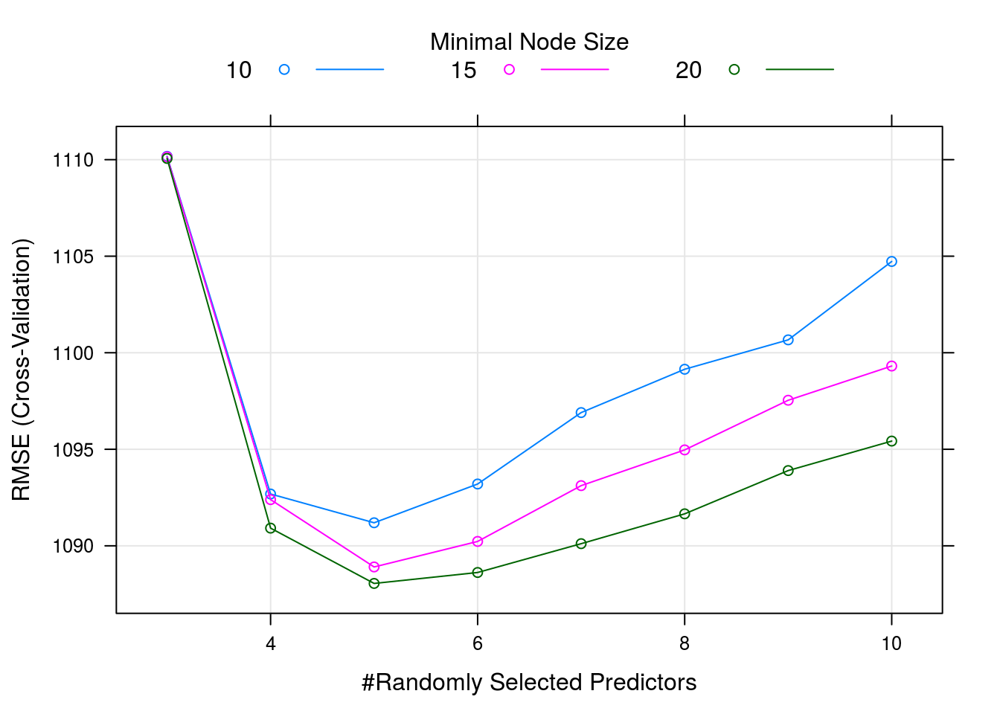
Observations:
- As per the plot shown above, the best score is achieved at mtry = 5 and min.node.size = 20.
Variable Importance
Let’s plot feature importance based on the RandomForest model
plot(varImp(rf_mod))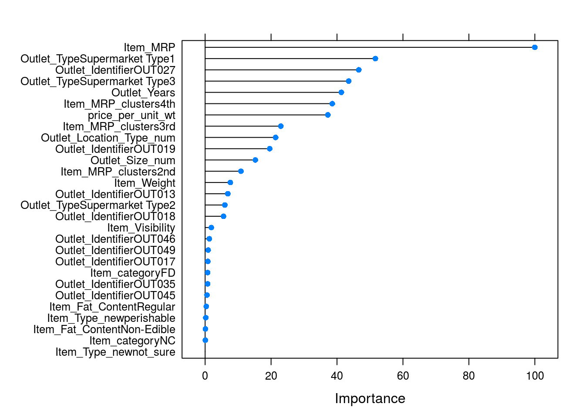
Observations:
- As expected Item_MRP is the most important variable in predicting the target variable. New features created by us, like price_per_unit_wt, Outlet_Years, Item_MRP_Clusters, are also among the top most important variables. This is why feature engineering plays such a crucial role in predictive modeling.
XGBoost
XGBoost is a fast and efficient algorithm and has been used to by the winners of many data science competitions. XGBoost works only with numeric variables and we have already replaced the categorical variables with numeric variables. There are many tuning parameters in XGBoost which can be broadly classified into General Parameters, Booster Parameters and Task Parameters.
General parameters refer to which booster we are using to do boosting. The commonly used are tree or linear model. Booster parameters depend on which booster you have chosen. *Learning Task parameters that decide on the learning scenario, for example, regression tasks may use different parameters with ranking tasks.
Let’s preview the parameters that we are going to use in our model.
- eta: It is also known as the learning rate or the shrinkage factor. It actually shrinks the feature weights to make the boosting process more conservative. The range is 0 to 1. Low eta value means the model is more robust to overfitting.
- gamma: The range is 0 to ∞. Larger the gamma more conservative the algorithm is.
- max_depth: We can specify maximum depth of a tree using this parameter.
- subsample: It is the proportion of rows that the model will randomly select to grow trees.
- colsample_bytree: It is the ratio of variables randomly chosen to build each tree in the model.
param_list = list(
objective = "reg:linear",
eta=0.01,
gamma = 1,
max_depth=6,
subsample=0.8,
colsample_bytree=0.5
)dtrain = xgb.DMatrix(data = as.matrix(train[,-c("Item_Identifier", "Item_Outlet_Sales")]), label= train$Item_Outlet_Sales)
dtest = xgb.DMatrix(data = as.matrix(test[,-c("Item_Identifier")]))Cross Validation
We are going to use the xgb.cv() function for cross validation. This function comes with the xgboost package itself. Here we are using cross validation for finding the optimal value of nrounds.
set.seed(112)
xgbcv = xgb.cv(params = param_list,
data = dtrain,
nrounds = 1000,
nfold = 5,
print_every_n = 10,
early_stopping_rounds = 30,
maximize = F)## [1] train-rmse:2746.725586+7.336395 test-rmse:2746.741797+30.998116
## Multiple eval metrics are present. Will use test_rmse for early stopping.
## Will train until test_rmse hasn't improved in 30 rounds.
##
## [11] train-rmse:2537.260938+5.858499 test-rmse:2539.031055+31.050055
## [21] train-rmse:2349.231885+4.482735 test-rmse:2352.873389+32.255671
## [31] train-rmse:2182.393750+4.819384 test-rmse:2187.824902+31.588163
## [41] train-rmse:2033.432080+3.195964 test-rmse:2040.415454+31.588752
## [51] train-rmse:1900.760058+2.740688 test-rmse:1910.174609+30.442020
## [61] train-rmse:1784.256690+2.877070 test-rmse:1796.284033+28.750707
## [71] train-rmse:1680.479932+2.497050 test-rmse:1695.349048+28.331918
## [81] train-rmse:1590.351367+2.354304 test-rmse:1607.833301+27.908130
## [91] train-rmse:1510.894165+2.035948 test-rmse:1531.593726+27.522115
## [101] train-rmse:1441.319312+1.659380 test-rmse:1465.053589+29.087921
## [111] train-rmse:1381.578052+2.426386 test-rmse:1408.426611+27.691651
## [121] train-rmse:1329.565503+2.454451 test-rmse:1359.327344+27.161061
## [131] train-rmse:1283.176050+2.888625 test-rmse:1316.178931+26.197404
## [141] train-rmse:1243.624048+2.574635 test-rmse:1280.237305+25.250655
## [151] train-rmse:1210.155518+2.584130 test-rmse:1250.134522+25.117012
## [161] train-rmse:1180.639380+2.815261 test-rmse:1224.006177+24.242971
## [171] train-rmse:1155.042627+2.457568 test-rmse:1201.782520+23.791665
## [181] train-rmse:1133.263232+2.564969 test-rmse:1183.207934+22.977824
## [191] train-rmse:1114.468555+2.585744 test-rmse:1167.656421+22.294357
## [201] train-rmse:1098.238403+3.042034 test-rmse:1154.633814+21.729746
## [211] train-rmse:1083.767114+3.474945 test-rmse:1143.161670+21.285152
## [221] train-rmse:1071.447070+3.508526 test-rmse:1134.116235+20.871062
## [231] train-rmse:1060.780518+3.622241 test-rmse:1126.463550+20.575531
## [241] train-rmse:1051.508252+3.255189 test-rmse:1119.907349+20.552631
## [251] train-rmse:1043.312622+3.268359 test-rmse:1114.685669+20.173664
## [261] train-rmse:1035.746997+2.930902 test-rmse:1110.081641+19.966049
## [271] train-rmse:1028.874536+2.943542 test-rmse:1105.989917+19.530901
## [281] train-rmse:1022.628345+2.937003 test-rmse:1102.838232+19.300798
## [291] train-rmse:1017.216028+2.821218 test-rmse:1100.273462+19.221121
## [301] train-rmse:1012.029614+2.743604 test-rmse:1098.101782+19.030941
## [311] train-rmse:1007.425781+2.755408 test-rmse:1096.336670+18.986031
## [321] train-rmse:1003.200305+2.701284 test-rmse:1094.916968+19.005910
## [331] train-rmse:999.357104+2.599227 test-rmse:1093.706055+19.035905
## [341] train-rmse:995.499194+2.425299 test-rmse:1092.699609+18.929201
## [351] train-rmse:991.902954+2.492520 test-rmse:1091.845703+18.983826
## [361] train-rmse:988.751245+2.519240 test-rmse:1091.190332+18.899727
## [371] train-rmse:985.493445+2.504406 test-rmse:1090.730664+18.812897
## [381] train-rmse:982.394104+2.462072 test-rmse:1090.280884+18.888615
## [391] train-rmse:979.547412+2.462087 test-rmse:1089.998340+18.846508
## [401] train-rmse:976.771387+2.411750 test-rmse:1089.900439+18.755224
## [411] train-rmse:973.951404+2.436468 test-rmse:1089.861890+18.818395
## [421] train-rmse:971.220996+2.519783 test-rmse:1089.869263+18.860485
## [431] train-rmse:968.606470+2.528438 test-rmse:1089.797754+18.815133
## [441] train-rmse:966.202258+2.767049 test-rmse:1089.844604+18.789729
## [451] train-rmse:963.874219+2.858829 test-rmse:1089.895117+18.779128
## Stopping. Best iteration:
## [430] train-rmse:968.889343+2.497103 test-rmse:1089.786206+18.836296Model Training
As per the verbose above, we got the best validation/test score at the 430th iteration. Hence, we will use nrounds = 430 for building the XGBoost model.
xgb_model = xgb.train(data = dtrain, params = param_list, nrounds = 430)Variable Importance
var_imp = xgb.importance(feature_names = setdiff(names(train), c("Item_Identifier", "Item_Outlet_Sales")),
model = xgb_model)
xgb.plot.importance(var_imp)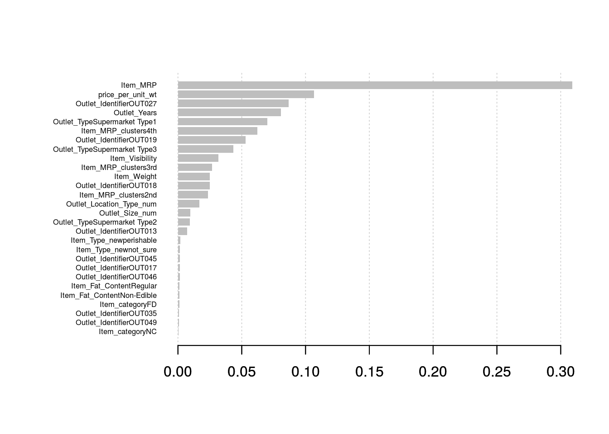
Observations:
- Again the features created by us, like price_per_unit_wt, Outlet_Years, Item_MRP_Clusters, are among the top most important variables.